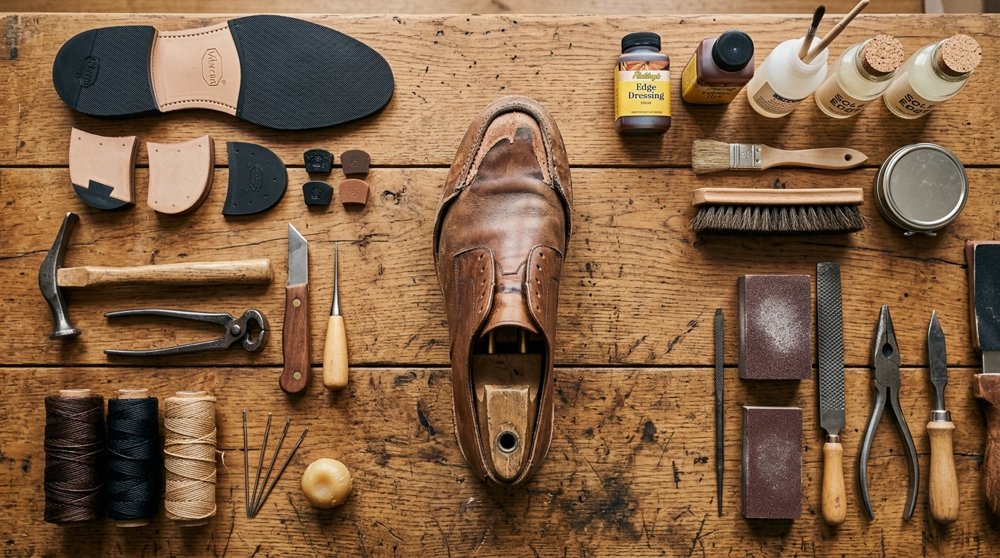
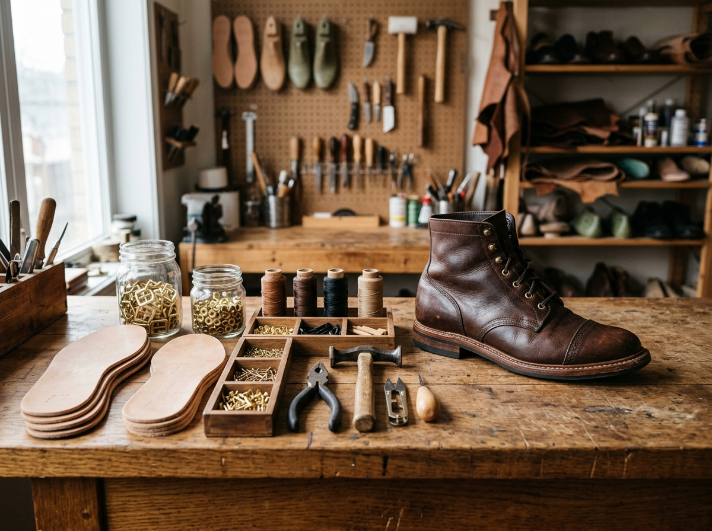

Step Zero
Bring Us the Problem
Whether it is a snapped heel, a torn seam or leather that has seen better days — the first step is simply bringing your footwear in. No repair is too minor to ask about.

Walk In
Bring your shoes directly to the workshop during drop-off hours. No appointment needed for standard assessments.

Call Ahead
For complex repairs or large batches, call ahead so we can prepare and give you a more accurate estimate on arrival.

Enquire Online
Upload photos through our repair enquiry form. We will review them and share an initial assessment before your visit.

WhatsApp Us
Send a photo of the damage via WhatsApp for a quick initial estimate. We respond during business hours.